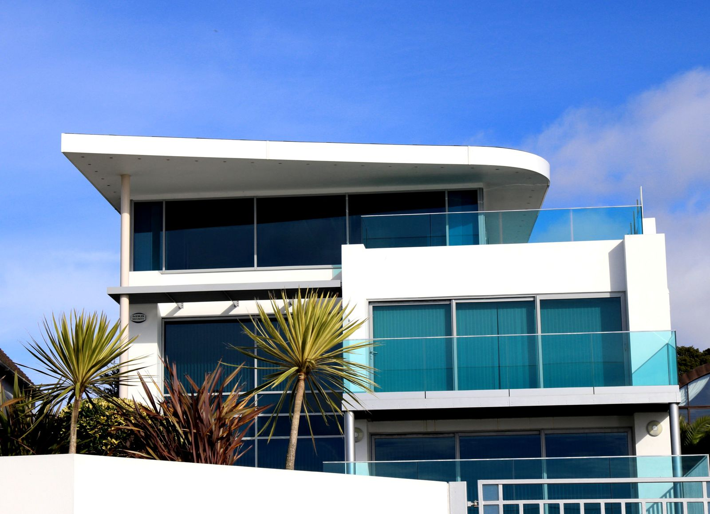

Redevelopment · MumbaiWhy redevelopment is Mumbai’s kindest option
Aging buildings on prime land are the city’s biggest opportunity. Here’s how society redevelopment works — fairly.
Across Mumbai, thousands of housing societies sit on strong land and weakening concrete. The frame is tired; the location is not. Redevelopment is how a building’s promise is renewed without asking a single family to leave the neighbourhood it loves.
Done fairly, redevelopment means larger carpet areas, safer RCC structure, working lifts and fire compliance — and a community that stays whole. Done badly, it means years in rented limbo and broken trust.
The difference is process. A RERA-registered developer, written area entitlements, milestone-linked timelines and member-first meetings are not extras; they are the minimum. When a society keeps its address and gains fifty more years, that is the kindest thing Mumbai can do for itself.